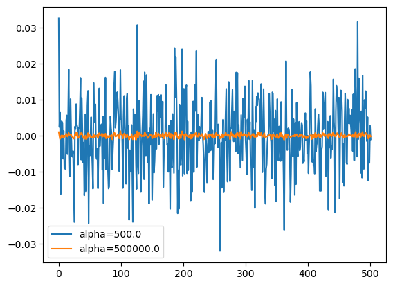
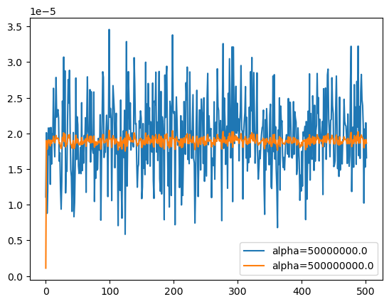

import numpy as np
import pandas as pd
import matplotlib.pyplot as plt
import sklearn.linear_model06wk-023: 취업+각종영어점수, Ridge
1. 강의영상
2. Imports
3. Data
df = pd.read_csv("https://raw.githubusercontent.com/guebin/MP2023/main/posts/employment_multicollinearity.csv")
np.random.seed(43052)
df['employment_score'] = df.gpa * 1.0 + df.toeic* 1/100 + np.random.randn(500)df| employment_score | gpa | toeic | toeic0 | toeic1 | toeic2 | toeic3 | toeic4 | toeic5 | toeic6 | ... | toeic490 | toeic491 | toeic492 | toeic493 | toeic494 | toeic495 | toeic496 | toeic497 | toeic498 | toeic499 | |
|---|---|---|---|---|---|---|---|---|---|---|---|---|---|---|---|---|---|---|---|---|---|
| 0 | 1.784955 | 0.051535 | 135 | 129.566309 | 133.078481 | 121.678398 | 113.457366 | 133.564200 | 136.026566 | 141.793547 | ... | 132.014696 | 140.013265 | 135.575816 | 143.863346 | 152.162740 | 132.850033 | 115.956496 | 131.842126 | 125.090801 | 143.568527 |
| 1 | 10.789671 | 0.355496 | 935 | 940.563187 | 935.723570 | 939.190519 | 938.995672 | 945.376482 | 927.469901 | 952.424087 | ... | 942.251184 | 923.241548 | 939.924802 | 921.912261 | 953.250300 | 931.743615 | 940.205853 | 930.575825 | 941.530348 | 934.221055 |
| 2 | 8.221213 | 2.228435 | 485 | 493.671390 | 493.909118 | 475.500970 | 480.363752 | 478.868942 | 493.321602 | 490.059102 | ... | 484.438233 | 488.101275 | 485.626742 | 475.330715 | 485.147363 | 468.553780 | 486.870976 | 481.640957 | 499.340808 | 488.197332 |
| 3 | 2.137594 | 1.179701 | 65 | 62.272565 | 55.957257 | 68.521468 | 76.866765 | 51.436321 | 57.166824 | 67.834920 | ... | 67.653225 | 65.710588 | 64.146780 | 76.662194 | 66.837839 | 82.379018 | 69.174745 | 64.475993 | 52.647087 | 59.493275 |
| 4 | 8.650144 | 3.962356 | 445 | 449.280637 | 438.895582 | 433.598274 | 444.081141 | 437.005100 | 434.761142 | 443.135269 | ... | 455.940348 | 435.952854 | 441.521145 | 443.038886 | 433.118847 | 466.103355 | 430.056944 | 423.632873 | 446.973484 | 442.793633 |
| ... | ... | ... | ... | ... | ... | ... | ... | ... | ... | ... | ... | ... | ... | ... | ... | ... | ... | ... | ... | ... | ... |
| 495 | 9.057243 | 4.288465 | 280 | 276.680902 | 274.502675 | 277.868536 | 292.283300 | 277.476630 | 281.671647 | 296.307373 | ... | 269.541846 | 278.220546 | 278.484758 | 284.901284 | 272.451612 | 265.784490 | 275.795948 | 280.465992 | 268.528889 | 283.638470 |
| 496 | 4.108020 | 2.601212 | 310 | 296.940263 | 301.545000 | 306.725610 | 314.811407 | 311.935810 | 309.695838 | 301.979914 | ... | 304.680578 | 295.476836 | 316.582100 | 319.412132 | 312.984039 | 312.372112 | 312.106944 | 314.101927 | 309.409533 | 297.429968 |
| 497 | 2.430590 | 0.042323 | 225 | 206.793217 | 228.335345 | 222.115146 | 216.479498 | 227.469560 | 238.710310 | 233.797065 | ... | 233.469238 | 235.160919 | 228.517306 | 228.349646 | 224.153606 | 230.860484 | 218.683195 | 232.949484 | 236.951938 | 227.997629 |
| 498 | 5.343171 | 1.041416 | 320 | 327.461442 | 323.019899 | 329.589337 | 313.312233 | 315.645050 | 324.448247 | 314.271045 | ... | 326.297700 | 309.893822 | 312.873223 | 322.356584 | 319.332809 | 319.405283 | 324.021917 | 312.363694 | 318.493866 | 310.973930 |
| 499 | 6.505106 | 3.626883 | 375 | 370.966595 | 364.668477 | 371.853566 | 373.574930 | 376.701708 | 356.905085 | 354.584022 | ... | 382.278782 | 379.460816 | 371.031640 | 370.272639 | 375.618182 | 369.252740 | 376.925543 | 391.863103 | 368.735260 | 368.520844 |
500 rows × 503 columns
4. True
- 신이라면 (=데이터가 만들어진 비밀을 알고 있다면) 아래와 같이 했을 것
## step1
df_train, df_test = sklearn.model_selection.train_test_split(df,test_size=0.3,random_state=42)
X = df_train.loc[:,'gpa':'toeic']
y = df_train[['employment_score']]
XX = df_test.loc[:,'gpa':'toeic']
yy = df_test[['employment_score']]
## step2
predictr = sklearn.linear_model.LinearRegression()
## step3
predictr.fit(X,y)
## step4 : pass LinearRegression()In a Jupyter environment, please rerun this cell to show the HTML representation or trust the notebook.
On GitHub, the HTML representation is unable to render, please try loading this page with nbviewer.org.
LinearRegression()
- 평가
print(f'train_score:\t {predictr.score(X,y):.4f}')
print(f'test_score:\t {predictr.score(XX,yy):.4f}')train_score: 0.9133
test_score: 0.91275. Baseline
- 모든 변수를 활용하여 회귀모형으로 적합 \(\to\) 최악의 결과
## step1
df_train, df_test = sklearn.model_selection.train_test_split(df,test_size=0.3,random_state=42)
X = df_train.loc[:,'gpa':'toeic499']
y = df_train[['employment_score']]
XX = df_test.loc[:,'gpa':'toeic499']
yy = df_test[['employment_score']]
## step2
predictr = sklearn.linear_model.LinearRegression()
## step3
predictr.fit(X,y)
## step4 : pass LinearRegression()In a Jupyter environment, please rerun this cell to show the HTML representation or trust the notebook.
On GitHub, the HTML representation is unable to render, please try loading this page with nbviewer.org.
LinearRegression()
- 평가
print(f'train_score:\t {predictr.score(X,y):.4f}')
print(f'test_score:\t {predictr.score(XX,yy):.4f}')train_score: 1.0000
test_score: 0.11716. Ridge
- 통계학자에게 자문: 이럴 경우 Ridge를 사용하면 됩니다..
## step1
df_train, df_test = sklearn.model_selection.train_test_split(df,test_size=0.3,random_state=42)
X = df_train.loc[:,'gpa':'toeic499']
y = df_train[['employment_score']]
XX = df_test.loc[:,'gpa':'toeic499']
yy = df_test[['employment_score']]
## step2
predictr = sklearn.linear_model.Ridge(alpha=1) # predictr = sklearn.linear_model.Ridge() 와 결과가 같다.
## step3
predictr.fit(X,y)
## step4 : pass Ridge(alpha=1)In a Jupyter environment, please rerun this cell to show the HTML representation or trust the notebook.
On GitHub, the HTML representation is unable to render, please try loading this page with nbviewer.org.
Ridge(alpha=1)
- 평가: Ridge 안 되는데요, 교수님..
print(f'train_score:\t {predictr.score(X,y):.4f}')
print(f'test_score:\t {predictr.score(XX,yy):.4f}')train_score: 1.0000
test_score: 0.1173- 하이퍼 파라메터 튜닝 \(\alpha=1.5\)
## step1
df_train, df_test = sklearn.model_selection.train_test_split(df,test_size=0.3,random_state=42)
X = df_train.loc[:,'gpa':'toeic499']
y = df_train[['employment_score']]
XX = df_test.loc[:,'gpa':'toeic499']
yy = df_test[['employment_score']]
## step2
predictr = sklearn.linear_model.Ridge(alpha=1.5)
## step3
predictr.fit(X,y)
## step4 : pass
#---#
print(f'train_score:\t {predictr.score(X,y):.4f}')
print(f'test_score:\t {predictr.score(XX,yy):.4f}')train_score: 1.0000
test_score: 0.1174- 좋아졌다?
- 하이퍼 파라메터 튜닝 \(\alpha=5e8\)
## step1
df_train, df_test = sklearn.model_selection.train_test_split(df,test_size=0.3,random_state=42)
X = df_train.loc[:,'gpa':'toeic499']
y = df_train[['employment_score']]
XX = df_test.loc[:,'gpa':'toeic499']
yy = df_test[['employment_score']]
## step2
predictr = sklearn.linear_model.Ridge(alpha=5e8)
## step3
predictr.fit(X,y)
## step4 : pass
#---#
print(f'train_score:\t {predictr.score(X,y):.4f}')
print(f'test_score:\t {predictr.score(XX,yy):.4f}')train_score: 0.7507
test_score: 0.7438- 오라클에 비할바는 아니긴한데 공선성이 있는 경우라도 Ridge에서 적절한 alpha를 고른다면 망하는 모형을 만들진 않음
7. Ridge는 왜 결과를 좋게 만들까?
A. 정확한 설명
- SVD를 이용하여 이론적인 계산하면 sklearn.linear_model.LinearRegression()로 적합한 결과보다 sklearn.linear_model.Ridge()로 적합한 결과를 더 좋게 만드는 \(\alpha\)가 항상 존재함을 증명할 수 있음.
B. 직관적 설명 (엄밀하지 않은 설명)
Step1: LinearRegression은 왜 망했는가?
- 토익의 계수는 실제로 \(\frac{1}{100}\)이다. 적딩히
toeic+ … +toeic499\(\approx\) 0.01 이라면
대충 맞는 답이다.
## step1
df_train, df_test = sklearn.model_selection.train_test_split(df,test_size=0.3,random_state=42)
X = df_train.loc[:,'gpa':'toeic499']
y = df_train[['employment_score']]
XX = df_test.loc[:,'gpa':'toeic499']
yy = df_test[['employment_score']]
## step2
predictr = sklearn.linear_model.LinearRegression()
## step3
predictr.fit(X,y)
## step4 : pass
#---#
print(f'train_score:\t {predictr.score(X,y):.4f}')
print(f'test_score:\t {predictr.score(XX,yy):.4f}')train_score: 1.0000
test_score: 0.1171predictr.coef_.reshape(-1)[1:].sum()0.010302732920632579- 그런데 사실 저 0.01이라는 값은 몇개의 계수만 있어도 만들 수 있다.
predictr.coef_.reshape(-1)[[4,5]].sum()0.010142832986793252- 이런논리로 치면 4,5에 해당하는 계수 (즉 toeic2, toeic3에 해당하는 계수) 만 있다면 사실 \(y\)를 설명하는데 충분했고, 나머지는 불필요한 특징이 된다. (그리고 불필요한 특징은 오버피팅을 유발한다)
Step2: Ridge의 아이디어
- Ridge의 아이디어: toeic2, toeic3 와 같이 몇개의 변수로만 0.01이라는 수를 설명할 수 없도록 “강제”하자. 즉 몇개의 변수로만 0.01이라는 수를 설명할 수 없도록 “패널티”를 주자.
- 패널티: 유사토익들의 계수값을 제곱한뒤 합치고(=\(l_2\)-norm을 구하고), 그 값이 0에서 떨어져 있을 수록 패널티를 줄꺼야!
- 그렇다면..? 0.01을 그냥 엔빵1해서 설명하면 되지않나?
1 용어 죄송합니다.. \(\frac{1}{n}\)이라고하기 좀 그래서요, 정확하게는 \(\frac{1}{p}\) 아닐까 해서요
- 패널티를 주는 정도? \(\alpha\)로 조절함.. \(\alpha\)를 크게 할수록 패널티를 많이줌
C. \(\alpha\)에 따른 계수값 변화
- 여러개의 predictor 학습
## step1
df_train, df_test = sklearn.model_selection.train_test_split(df,test_size=0.3,random_state=42)
X = df_train.loc[:,'gpa':'toeic499']
y = df_train[['employment_score']]
XX = df_test.loc[:,'gpa':'toeic499']
yy = df_test[['employment_score']]
# step2: 여러개의 predictor 생성
alphas = [5e2, 5e3, 5e4, 5e5, 5e6, 5e7, 5e8]
predictrs = [sklearn.linear_model.Ridge(alpha=alpha) for alpha in alphas]
# step3: fit
for predictr in predictrs:
predictr.fit(X,y)- 계수값 시각화
plt.plot(predictrs[0].coef_.reshape(-1),label=f'alpha={predictrs[0].alpha}')
plt.plot(predictrs[3].coef_.reshape(-1),label=f'alpha={predictrs[3].alpha}')
plt.legend()<matplotlib.legend.Legend at 0x7fd62fd253f0>
plt.plot(predictrs[3].coef_.reshape(-1),label=f'alpha={predictrs[3].alpha}')
plt.plot(predictrs[5].coef_.reshape(-1),label=f'alpha={predictrs[5].alpha}')
plt.legend()<matplotlib.legend.Legend at 0x7fd62fddab60>
plt.plot(predictrs[5].coef_.reshape(-1),label=f'alpha={predictrs[5].alpha}')
plt.plot(predictrs[-1].coef_.reshape(-1),label=f'alpha={predictrs[-1].alpha}')
plt.legend()<matplotlib.legend.Legend at 0x7fd62fc43280>
- 직관: 마지막 predictor의 계수값을 살펴보자.
predictrs[-1].coef_.reshape(-1)array([1.10421248e-06, 1.89938091e-05, 1.77768343e-05, 1.82118332e-05,
1.90895673e-05, 1.87128138e-05, 1.90343037e-05, 1.82483251e-05,
1.90405022e-05, 1.85802628e-05, 1.90021086e-05, 1.88952130e-05,
1.96003229e-05, 1.89154663e-05, 1.86638217e-05, 1.92666606e-05,
1.97107043e-05, 1.92214868e-05, 1.92961317e-05, 1.93321368e-05,
1.92194541e-05, 1.85663279e-05, 1.86805137e-05, 1.81649873e-05,
1.78656367e-05, 1.83171419e-05, 1.94428947e-05, 1.89710925e-05,
2.00598946e-05, 1.88384883e-05, 1.98903125e-05, 1.81113551e-05,
1.85043847e-05, 1.84424971e-05, 1.91508275e-05, 1.97427867e-05,
1.93598061e-05, 1.98264264e-05, 1.89934042e-05, 1.84770850e-05,
1.83617634e-05, 1.79346774e-05, 1.84943159e-05, 1.89803006e-05,
1.78633749e-05, 1.80073666e-05, 1.85664525e-05, 1.97390143e-05,
1.86574281e-05, 1.92233226e-05, 1.91281904e-05, 1.85617627e-05,
1.83939489e-05, 1.84309427e-05, 1.88142167e-05, 1.84159665e-05,
1.94078579e-05, 1.84515402e-05, 1.88107980e-05, 1.85889903e-05,
1.89357356e-05, 1.88750847e-05, 1.92107444e-05, 1.81799279e-05,
1.92122152e-05, 1.97863670e-05, 1.89851436e-05, 1.88974919e-05,
1.88566578e-05, 1.95841935e-05, 1.86398380e-05, 1.95801159e-05,
1.87550098e-05, 1.87392625e-05, 1.87462595e-05, 1.96056001e-05,
1.80626630e-05, 1.88237701e-05, 1.83108446e-05, 1.88087164e-05,
1.84723703e-05, 1.84767748e-05, 1.89267252e-05, 1.87604297e-05,
1.86945591e-05, 1.92924236e-05, 1.77843453e-05, 1.85415541e-05,
1.91448999e-05, 1.98281375e-05, 1.97994651e-05, 1.86653004e-05,
1.87298830e-05, 1.87474975e-05, 1.90018315e-05, 1.92043808e-05,
1.88941675e-05, 1.81646176e-05, 1.91508494e-05, 2.04322537e-05,
1.92111546e-05, 1.93061022e-05, 1.92088349e-05, 1.80206353e-05,
1.89399818e-05, 1.96895533e-05, 1.94410839e-05, 1.92051217e-05,
1.84961416e-05, 1.89785667e-05, 1.92235780e-05, 1.86729143e-05,
1.88439733e-05, 1.76776615e-05, 1.87493841e-05, 1.86986837e-05,
1.81917859e-05, 1.94657238e-05, 1.82063420e-05, 1.78143049e-05,
1.88432683e-05, 1.90674860e-05, 1.86411824e-05, 1.93286721e-05,
1.75163829e-05, 1.86852659e-05, 2.02343956e-05, 1.82025623e-05,
1.89153395e-05, 1.98862774e-05, 1.94775038e-05, 1.90665531e-05,
1.94170642e-05, 1.88227118e-05, 1.88792179e-05, 1.89712787e-05,
1.87855482e-05, 1.87895464e-05, 2.00798925e-05, 1.97167119e-05,
1.91644137e-05, 1.90990710e-05, 1.85836048e-05, 1.82346595e-05,
1.85731253e-05, 1.84871242e-05, 1.90728256e-05, 1.90277156e-05,
1.93085319e-05, 1.91719254e-05, 1.80097271e-05, 1.82517485e-05,
1.90904218e-05, 1.85232604e-05, 1.88184612e-05, 1.84002976e-05,
2.00337440e-05, 1.86478638e-05, 1.93507546e-05, 1.85547358e-05,
1.97154574e-05, 1.91189346e-05, 1.93320777e-05, 1.85313268e-05,
1.91085306e-05, 1.88406812e-05, 1.87444892e-05, 1.96637559e-05,
1.83552699e-05, 1.80759243e-05, 1.94662845e-05, 1.93761303e-05,
1.98339288e-05, 1.87139235e-05, 1.91131387e-05, 1.85801855e-05,
1.91544816e-05, 1.98413649e-05, 1.84027849e-05, 1.81842651e-05,
1.95888229e-05, 1.80738476e-05, 1.92457286e-05, 1.91474170e-05,
1.88737956e-05, 1.78029998e-05, 1.97734483e-05, 1.92409710e-05,
1.97346045e-05, 1.99425451e-05, 1.89157923e-05, 1.82538525e-05,
1.87475300e-05, 1.79663692e-05, 1.94360535e-05, 1.93333725e-05,
1.81368431e-05, 1.91860664e-05, 2.03648683e-05, 1.92870391e-05,
1.92561212e-05, 1.92408929e-05, 1.77556464e-05, 1.89317813e-05,
1.95230859e-05, 1.91845519e-05, 1.88923023e-05, 1.88368476e-05,
1.89013580e-05, 1.82113056e-05, 1.86295402e-05, 1.92236940e-05,
1.80025543e-05, 1.92322271e-05, 1.80917953e-05, 1.87188051e-05,
1.93772655e-05, 1.87894009e-05, 1.86773984e-05, 1.96830961e-05,
1.94593808e-05, 1.99377297e-05, 1.85707832e-05, 1.88667594e-05,
1.85589760e-05, 1.98498326e-05, 1.88878514e-05, 1.90686529e-05,
1.86868639e-05, 1.90576790e-05, 1.95494214e-05, 1.86567117e-05,
1.85992014e-05, 1.77199587e-05, 1.82193592e-05, 1.90965903e-05,
1.96016869e-05, 1.88116657e-05, 1.81131528e-05, 1.85436209e-05,
1.92951259e-05, 1.92495993e-05, 1.84570073e-05, 1.94529446e-05,
1.92760629e-05, 1.92236816e-05, 1.85750512e-05, 1.95451343e-05,
1.82912208e-05, 1.88851896e-05, 1.86295173e-05, 1.84150640e-05,
1.95101106e-05, 1.98423439e-05, 1.88687440e-05, 1.91657943e-05,
1.89387389e-05, 1.89907539e-05, 1.90653825e-05, 1.80854343e-05,
1.86906336e-05, 1.85793308e-05, 1.84992786e-05, 1.93964742e-05,
1.83344151e-05, 1.89611068e-05, 1.91457644e-05, 1.88755070e-05,
1.98511526e-05, 1.93068196e-05, 1.93316489e-05, 1.89507435e-05,
1.89083004e-05, 1.91358509e-05, 1.87803906e-05, 1.78160168e-05,
1.94603877e-05, 2.02569965e-05, 1.87423291e-05, 1.94609617e-05,
1.91292677e-05, 1.85958571e-05, 1.88629266e-05, 1.90600256e-05,
1.82221314e-05, 1.95093258e-05, 1.89176339e-05, 2.00028045e-05,
1.94052035e-05, 1.86744967e-05, 1.89125601e-05, 2.02089363e-05,
1.80569192e-05, 2.02141130e-05, 1.93147541e-05, 1.89011113e-05,
1.93335891e-05, 1.96767360e-05, 1.90364715e-05, 1.94635849e-05,
1.90397143e-05, 1.91973258e-05, 1.85857694e-05, 1.91487106e-05,
1.92897509e-05, 1.99589223e-05, 1.89690091e-05, 1.90089893e-05,
1.80391078e-05, 1.89867708e-05, 1.91430968e-05, 1.92719424e-05,
1.95648244e-05, 1.85975115e-05, 1.92077870e-05, 1.84415844e-05,
1.88715614e-05, 1.85970322e-05, 1.93261490e-05, 1.86726361e-05,
1.97716032e-05, 1.92749150e-05, 2.00954709e-05, 1.90876286e-05,
1.89190693e-05, 1.98831620e-05, 1.91612367e-05, 1.86269524e-05,
1.89155394e-05, 1.89824518e-05, 1.98347756e-05, 1.86788886e-05,
1.83508292e-05, 1.85069060e-05, 1.86909372e-05, 1.85978543e-05,
1.88150510e-05, 1.89755849e-05, 1.90099289e-05, 1.90515657e-05,
1.93189513e-05, 1.82151178e-05, 1.78471089e-05, 1.91763316e-05,
1.84903926e-05, 1.92863572e-05, 1.90497739e-05, 1.87657428e-05,
1.87801680e-05, 1.85137448e-05, 1.91226761e-05, 1.94084785e-05,
1.81950620e-05, 1.81823646e-05, 1.87513814e-05, 1.97922951e-05,
1.87200102e-05, 1.98409879e-05, 1.85874173e-05, 1.90513332e-05,
1.85234477e-05, 1.81902197e-05, 1.76367508e-05, 1.90389194e-05,
1.85299355e-05, 1.95358518e-05, 1.81772601e-05, 1.93671350e-05,
1.91528856e-05, 1.91322975e-05, 1.85830738e-05, 1.85626882e-05,
1.86250726e-05, 1.84514809e-05, 1.86800234e-05, 1.89256964e-05,
1.90280385e-05, 1.88870537e-05, 1.86929332e-05, 1.95167742e-05,
1.86377119e-05, 1.93693632e-05, 1.94429807e-05, 1.90730542e-05,
1.86276638e-05, 1.86225787e-05, 1.87333026e-05, 1.94293224e-05,
1.87174307e-05, 1.93106731e-05, 1.91898445e-05, 1.91446507e-05,
1.83627209e-05, 1.85185991e-05, 1.90680366e-05, 1.88180597e-05,
1.86586581e-05, 1.80051184e-05, 1.83329730e-05, 1.82088945e-05,
1.87516598e-05, 1.82744310e-05, 1.90219092e-05, 1.89098591e-05,
1.89001214e-05, 1.90959896e-05, 1.77157866e-05, 1.91760361e-05,
1.80496598e-05, 1.85629242e-05, 1.93527162e-05, 1.85046434e-05,
1.97977476e-05, 1.82757747e-05, 1.92849021e-05, 1.86829990e-05,
1.86752898e-05, 1.95540241e-05, 1.92250030e-05, 1.84817730e-05,
1.94636774e-05, 1.86057300e-05, 1.90096458e-05, 1.91037821e-05,
1.98095086e-05, 1.92558748e-05, 1.94175627e-05, 1.86155519e-05,
1.91386204e-05, 1.89659072e-05, 1.89507918e-05, 1.88868989e-05,
1.91223138e-05, 1.81488441e-05, 1.95885497e-05, 1.87850789e-05,
1.90457546e-05, 1.96549561e-05, 1.86983597e-05, 1.89788151e-05,
1.98384237e-05, 1.99479277e-05, 1.91275095e-05, 1.89970341e-05,
1.85749782e-05, 1.91683345e-05, 1.91850806e-05, 1.97386011e-05,
1.93320833e-05, 1.92560345e-05, 1.85426153e-05, 1.85185853e-05,
1.85764448e-05, 1.94279426e-05, 1.97685699e-05, 1.91733090e-05,
1.84972022e-05, 1.89924907e-05, 1.83467563e-05, 1.95149016e-05,
1.84410610e-05, 1.86536281e-05, 1.88181888e-05, 1.85487807e-05,
1.88565643e-05, 1.89056942e-05, 1.95082352e-05, 1.91711709e-05,
1.91422027e-05, 1.91363321e-05, 1.89114818e-05, 1.85390554e-05,
1.92949067e-05, 1.88019353e-05, 1.85332879e-05, 1.86699430e-05,
1.96934870e-05, 2.01293426e-05, 1.81411289e-05, 1.86806981e-05,
1.90987154e-05, 1.85866377e-05, 1.96875267e-05, 1.88785203e-05,
1.94435510e-05, 1.85812461e-05, 1.97178935e-05, 1.90067232e-05,
2.02306858e-05, 1.86213361e-05, 1.94255182e-05, 1.86417320e-05,
1.95689564e-05, 1.97728792e-05, 1.94352125e-05, 1.93768903e-05,
1.90643113e-05, 1.79709383e-05, 1.90573271e-05, 1.85638225e-05,
1.91337229e-05, 1.86437625e-05])- 불필요한 변수가 나올수 없는 구조임. (한 두개로 전체를 설명할 수 없음)
- 모든 변수는 대략 2e-5(\(\approx \frac{1}{100}\frac{1}{501}\)) 만큼의 가치가 있음. 여기에서 1/100은 원래 토익의 계수, 501이라는 숫자는 (토익+유사토익)점수를 의미하는 변수의 숫자
- 고급: 살짝 1/(100*501)보다 전체적으로 값이 작아보이는건 기분탓은 아님 (Ridge의 특징)
1/(100*501)1.9960079840319362e-05D. \(\alpha\)에 따른 실험내용 정리
sum(predictrs[0].coef_.reshape(-1)**2)0.04671489217911739predictrs[0].score(XX,yy)0.20264452460057358for predictr in predictrs:
print(f'alpha={predictr.alpha:.1e}\t'
f'panalty={sum(predictr.coef_.reshape(-1)**2):.3f}\t'
f'toeic_coefs.sum()={sum(predictr.coef_.reshape(-1)[1:]):.4f} \t'
f'test_score={predictr.score(XX,yy):.2f}')alpha=5.0e+02 panalty=0.047 toeic_coefs.sum()=0.0103 test_score=0.20
alpha=5.0e+03 panalty=0.022 toeic_coefs.sum()=0.0102 test_score=0.46
alpha=5.0e+04 panalty=0.003 toeic_coefs.sum()=0.0099 test_score=0.69
alpha=5.0e+05 panalty=0.000 toeic_coefs.sum()=0.0099 test_score=0.74
alpha=5.0e+06 panalty=0.000 toeic_coefs.sum()=0.0099 test_score=0.74
alpha=5.0e+07 panalty=0.000 toeic_coefs.sum()=0.0098 test_score=0.75
alpha=5.0e+08 panalty=0.000 toeic_coefs.sum()=0.0095 test_score=0.74E. \(\alpha\)가 크다고 무조건 좋은건 아니다.
## step1
df_train, df_test = sklearn.model_selection.train_test_split(df,test_size=0.3,random_state=42)
X = df_train.loc[:,'gpa':'toeic499']
y = df_train[['employment_score']]
XX = df_test.loc[:,'gpa':'toeic499']
yy = df_test[['employment_score']]
## step2
predictr = sklearn.linear_model.Ridge(alpha=1e12)
## step3
predictr.fit(X,y)
## step4 : pass
#---#
print(f'train_score:\t {predictr.score(X,y):.4f}')
print(f'test_score:\t {predictr.score(XX,yy):.4f}')train_score: 0.0191
test_score: 0.0140predictr.coef_[0][1:].sum() # 걍 사이좋게 0.. alpha가 커질수록 0.01에서 점점 줄어드는건 기분탓이 아니었어..0.00012585319204891574